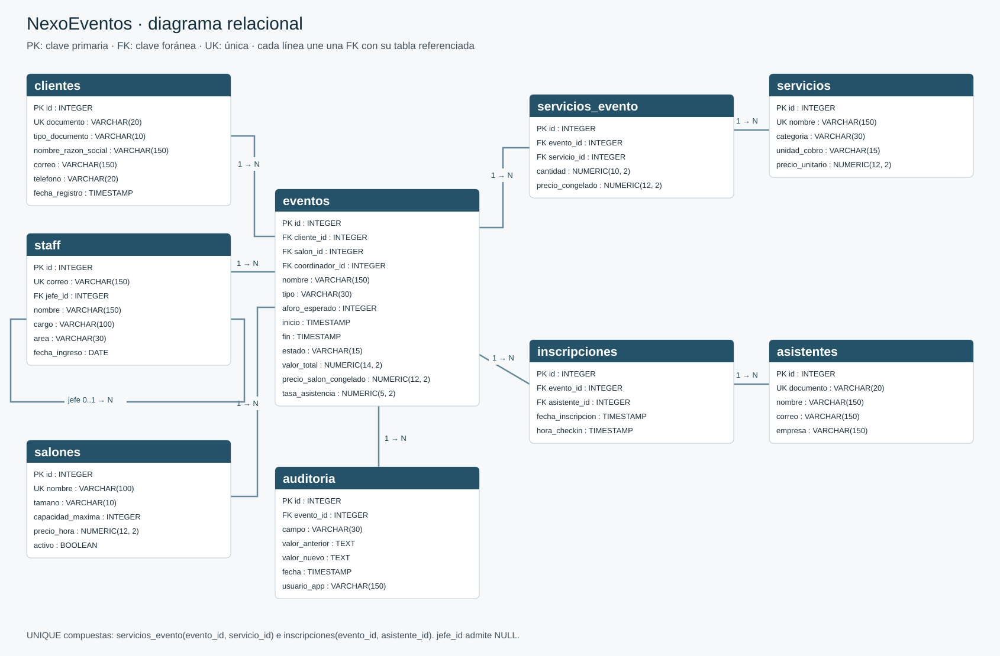

Diagrama relacional
El modelo tiene nueve tablas. servicios_evento resuelve la relación muchos a muchos entre eventos y servicios; inscripciones hace lo mismo entre eventos y asistentes. El staff tiene una relación consigo mismo para identificar al jefe inmediato.
Versiones gráficas: SVG y PNG. En diagrama_relacional.html el gráfico se muestra directamente. El siguiente código conserva las cardinalidades en Mermaid.

|| representa exactamente uno; o{, cero o muchos; o|, cero o uno. Un empleado puede no tener jefe, pero cada evento tiene cliente, salón y coordinador obligatorios.
Los datos de cliente, salón, asistente y servicio se almacenan una sola vez. Las tablas puente tienen claves únicas compuestas para impedir duplicar una contratación o una inscripción. El precio congelado es un dato de la contratación, distinto de la tarifa vigente del catálogo. valor_total y tasa_asistencia se conservan porque el enunciado pide almacenarlos y los triggers mantienen su consistencia.
Las longitudes, la precisión y las restricciones completas están en diccionario_datos.md. El esquema generado corresponde a app/models.py.